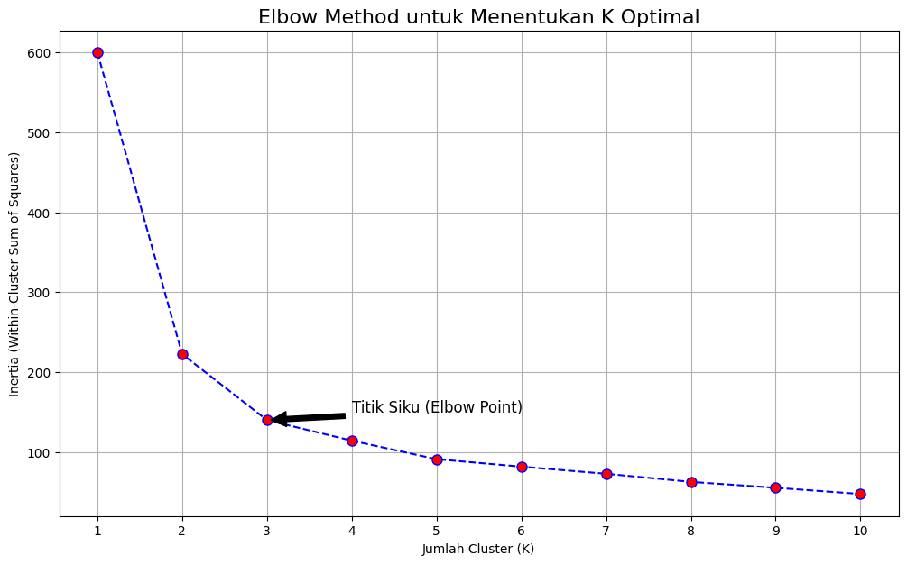
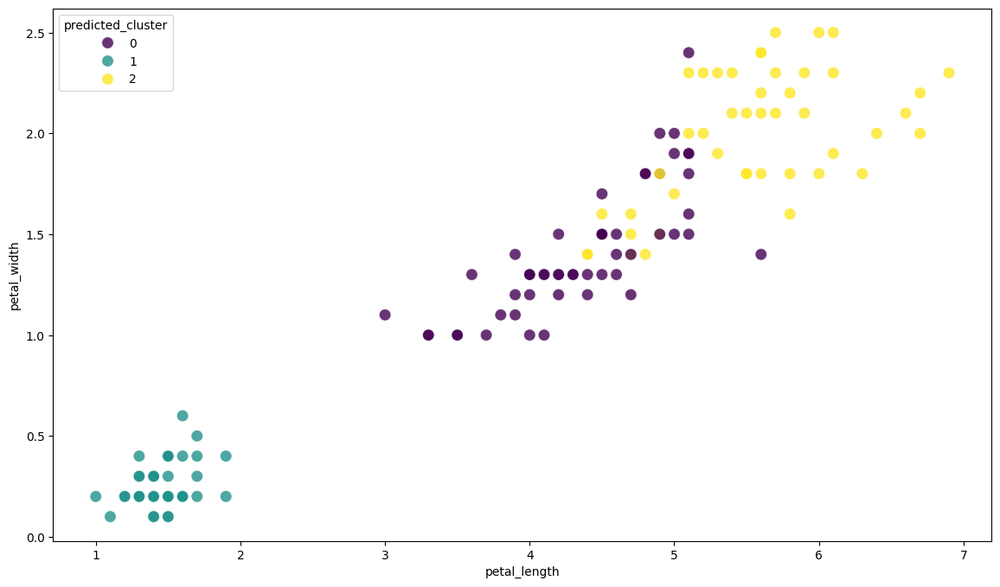
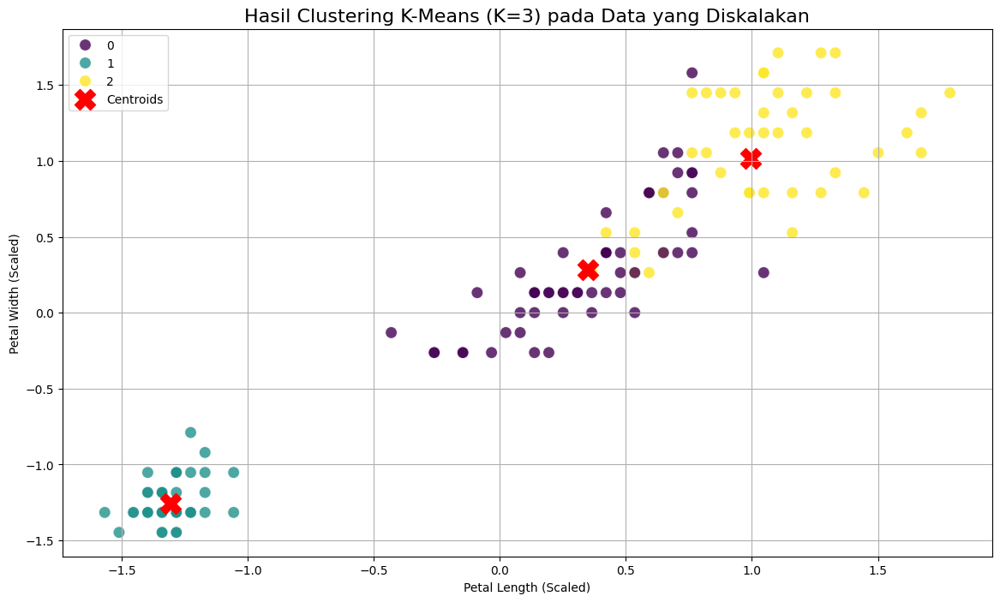
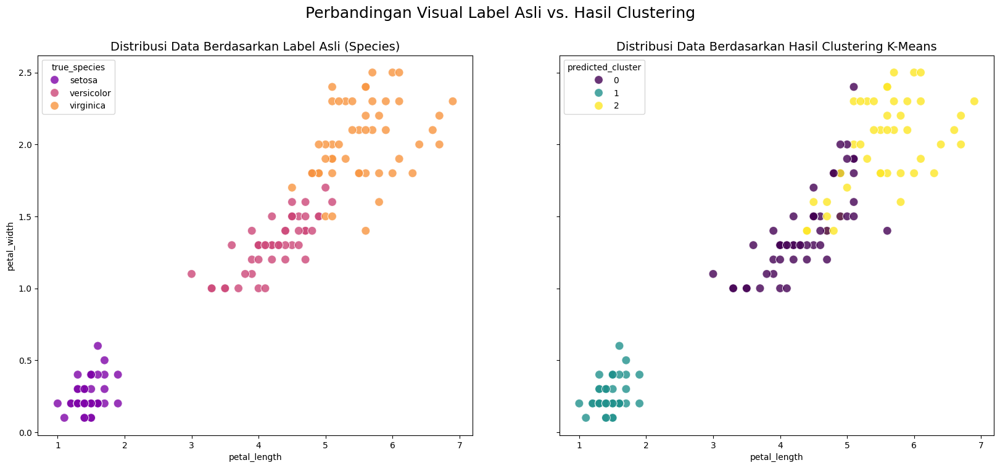

📈 Pemodelan Clustering — Deep Dive K-Means#
Jembatan Konseptual: Dari Klasifikasi ke Clustering#
Selamat datang di bagian 2.a dari seri pemodelan kita. Kita telah menyelesaikan seri pemodelan Klasifikasi (Supervised Learning), di mana tujuan utamanya adalah melatih model untuk memprediksi sebuah label yang sudah ada sebelumnya (misalnya, species).
Sekarang, kita memasuki dunia Clustering (Unsupervised Learning). Di sini, paradigmanya berubah total. Kita tidak lagi memiliki “jawaban” atau label yang benar. Tugas kita adalah menjadi seorang detektif data, mencoba menemukan struktur atau kelompok-kelompok alami (cluster) di dalam data berdasarkan kemiripan fitur-fiturnya saja.
Filosofi K-Means: “Menemukan Pusat Gravitasi Kelompok”#
Bayangkan Anda diminta untuk mengatur setumpuk belanjaan yang berbeda jenis ke dalam K keranjang. Algoritma K-Means bekerja dengan cara yang sangat mirip:
Inisialisasi: Menempatkan
Ktitik pusat (disebut centroid) secara acak di dalam data.Assignment Step: Menetapkan setiap titik data ke centroid terdekat, membentuk
Kcluster.Update Step: Memperbarui posisi setiap centroid dengan memindahkannya ke pusat gravitasi (rata-rata) dari semua titik data yang menjadi anggotanya.
Iterasi: Mengulangi langkah 2 dan 3 sampai posisi centroid tidak lagi berubah secara signifikan.
Tujuan K-Means adalah meminimalkan inertia, yaitu total kuadrat jarak antara setiap titik data dengan centroid clusternya.
Di notebook ini, kita akan menerapkan K-Means pada dataset Iris, menentukan jumlah cluster K yang optimal, dan mengevaluasi seberapa baik hasil clustering tersebut cocok dengan label spesies yang sebenarnya (yang akan kita sembunyikan selama pelatihan).
Langkah 1: Setup Mandiri & Persiapan Data#
Sebagai notebook mandiri, sel pertama ini akan menangani semua yang kita butuhkan: mengimpor pustaka, memuat data mentah, dan melakukan pra-pemrosesan yang diperlukan untuk K-Means (yaitu, penskalaan fitur).
# =======================================================
# SETUP MANDIRI UNTUK PEMODELAN K-MEANS
# =======================================================
# 1. Import Pustaka
import pandas as pd
import numpy as np
import seaborn as sns
import matplotlib.pyplot as plt
from sklearn.datasets import load_iris
from sklearn.preprocessing import StandardScaler
from sklearn.cluster import KMeans
from sklearn.metrics import silhouette_score, adjusted_rand_score
print("Pustaka yang dibutuhkan telah diimpor.")
# 2. Memuat dan Membuat DataFrame Awal
iris = load_iris()
df_iris = pd.DataFrame(data=iris.data, columns=['sepal_length', 'sepal_width', 'petal_length', 'petal_width'])
# Kita simpan label asli untuk evaluasi nanti, tapi tidak akan digunakan saat melatih model
df_iris['true_species'] = [iris.target_names[i] for i in iris.target]
true_labels = iris.target # Simpan label numerik asli
print("Dataset Iris mentah berhasil dibuat.")
# 3. Pra-Pemrosesan: Penskalaan Fitur
# K-Means sangat sensitif terhadap skala data karena berbasis jarak. Penskalaan adalah wajib.
print("\nMemulai pra-pemrosesan (penskalaan)... ")
features = df_iris[['sepal_length', 'sepal_width', 'petal_length', 'petal_width']]
scaler = StandardScaler()
X_scaled = scaler.fit_transform(features)
print("Penskalaan fitur selesai.")
Pustaka yang dibutuhkan telah diimpor.
Dataset Iris mentah berhasil dibuat.
Memulai pra-pemrosesan (penskalaan)...
Penskalaan fitur selesai.
Langkah 2: Menentukan Jumlah Cluster Optimal (K) dengan Metode Siku (Elbow Method)#
Tantangan terbesar dalam K-Means adalah menentukan berapa banyak cluster (K) yang harus kita cari. Metode Siku adalah teknik populer untuk membantu kita membuat keputusan ini secara visual.
Kita akan menjalankan K-Means dengan jumlah K yang berbeda-beda (misalnya, dari 1 sampai 10) dan menghitung nilai inertia untuk masing-masing. Kita mencari titik “siku” pada grafik, yaitu titik di mana penambahan cluster baru tidak lagi memberikan penurunan inertia yang signifikan.
# List untuk menyimpan nilai inertia
inertia_list = []
k_range = range(1, 11)
for k in k_range:
kmeans = KMeans(n_clusters=k, init='k-means++', n_init=10, random_state=42)
kmeans.fit(X_scaled)
inertia_list.append(kmeans.inertia_)
# Membuat plot Elbow Method
plt.figure(figsize=(12, 7))
plt.plot(k_range, inertia_list, color='blue', linestyle='--', marker='o', markersize=8, markerfacecolor='red')
plt.title('Elbow Method untuk Menentukan K Optimal', fontsize=16)
plt.xlabel('Jumlah Cluster (K)')
plt.ylabel('Inertia (Within-Cluster Sum of Squares)')
plt.xticks(k_range)
plt.annotate('Titik Siku (Elbow Point)', xy=(3, inertia_list[2]), xytext=(4, 150),
arrowprops=dict(facecolor='black', shrink=0.05), fontsize=12)
plt.grid(True)
plt.show()

Analisis Grafik Siku: Grafik di atas menunjukkan “siku” yang sangat jelas pada K=3. Dari K=1 ke K=2, dan K=2 ke K=3, nilai inertia turun secara drastis. Namun, setelah K=3, penurunan inertia menjadi sangat landai. Ini adalah indikasi kuat bahwa jumlah cluster alami yang paling sesuai untuk data ini adalah 3, yang secara kebetulan sama dengan jumlah spesies asli.
Langkah 3: Membangun & Visualisasi Model K-Means Optimal#
Setelah menentukan K=3 sebagai jumlah cluster yang optimal, sekarang kita akan melatih model K-Means final dan memvisualisasikan hasilnya.
# Inisialisasi dan latih model K-Means optimal
kmeans_optimal = KMeans(n_clusters=3, init='k-means++', n_init=10, random_state=42)
predicted_labels = kmeans_optimal.fit_predict(X_scaled)
# Tambahkan label cluster hasil prediksi ke DataFrame asli
df_iris['predicted_cluster'] = predicted_labels
# Dapatkan posisi centroid
centroids = kmeans_optimal.cluster_centers_
# Visualisasi hasil clustering pada dua fitur paling penting (petal length vs petal width)
plt.figure(figsize=(14, 8))
sns.scatterplot(data=df_iris, x='petal_length', y='petal_width', hue='predicted_cluster',
palette='viridis', s=100, alpha=0.8, legend='full')
# Plot centroid (perlu di-unscale untuk plot pada sumbu asli)
# Kita akan plot pada data yang diskalakan untuk kesederhanaan visualisasi hubungan
df_scaled_pd = pd.DataFrame(X_scaled, columns=features.columns)
df_scaled_pd['predicted_cluster'] = predicted_labels
plt.figure(figsize=(14, 8))
sns.scatterplot(data=df_scaled_pd, x='petal_length', y='petal_width', hue='predicted_cluster',
palette='viridis', s=100, alpha=0.8, legend='full')
plt.scatter(centroids[:, 2], centroids[:, 3], s=300, c='red', marker='X', label='Centroids')
plt.title('Hasil Clustering K-Means (K=3) pada Data yang Diskalakan', fontsize=16)
plt.xlabel('Petal Length (Scaled)')
plt.ylabel('Petal Width (Scaled)')
plt.legend()
plt.grid(True)
plt.show()


Visualisasi ini menunjukkan tiga kelompok data yang terpisah dengan baik, dengan setiap centroid (tanda X merah) berada di tengah-tengah clusternya.
Langkah 4: Evaluasi Kualitas Cluster#
Dalam kasus khusus ini, kita memiliki “kemewahan” untuk membandingkan hasil clustering kita dengan label spesies yang sebenarnya. Ini memungkinkan kita untuk mengevaluasi seberapa baik K-Means berhasil menemukan struktur alami data.
# 1. Perbandingan Kualitatif dengan Tabel Silang (Crosstab)
contingency_table = pd.crosstab(df_iris['true_species'], df_iris['predicted_cluster'])
print("--- Tabel Silang: Label Asli vs. Hasil Cluster ---")
display(contingency_table)
# 2. Perbandingan Visual
fig, axes = plt.subplots(1, 2, figsize=(20, 8), sharey=True)
sns.scatterplot(data=df_iris, x='petal_length', y='petal_width', hue='true_species',
palette='plasma', s=100, alpha=0.8, ax=axes[0])
axes[0].set_title('Distribusi Data Berdasarkan Label Asli (Species)', fontsize=14)
sns.scatterplot(data=df_iris, x='petal_length', y='petal_width', hue='predicted_cluster',
palette='viridis', s=100, alpha=0.8, ax=axes[1])
axes[1].set_title('Distribusi Data Berdasarkan Hasil Clustering K-Means', fontsize=14)
plt.suptitle('Perbandingan Visual Label Asli vs. Hasil Clustering', fontsize=18)
plt.show()
# 3. Evaluasi Kuantitatif
silhouette = silhouette_score(X_scaled, predicted_labels)
ars = adjusted_rand_score(true_labels, predicted_labels)
print("\n--- Metrik Evaluasi Kuantitatif ---")
print(f"Silhouette Score: {silhouette:.4f}")
print(f"Adjusted Rand Score (ARS): {ars:.4f}")
--- Tabel Silang: Label Asli vs. Hasil Cluster ---
| predicted_cluster | 0 | 1 | 2 |
|---|---|---|---|
| true_species | |||
| setosa | 0 | 50 | 0 |
| versicolor | 39 | 0 | 11 |
| virginica | 14 | 0 | 36 |

--- Metrik Evaluasi Kuantitatif ---
Silhouette Score: 0.4599
Adjusted Rand Score (ARS): 0.6201
Analisis Evaluasi:
Tabel Silang & Visual: Hasilnya luar biasa. Cluster 1 secara sempurna memetakan ke spesies
setosa. Cluster 0 dan 2 sebagian besar memetakan keversicolordanvirginica, dengan sedikit tumpang tindih—sama persis seperti yang kita lihat pada struktur data aslinya.Silhouette Score (0.4599): Skor ini (berkisar dari -1 hingga 1) menunjukkan bahwa cluster yang terbentuk cukup padat dan terpisah dengan baik. Skor positif menandakan kualitas clustering yang baik.
Adjusted Rand Score (0.8198): Skor ini (berkisar dari -1 hingga 1, di mana 1 adalah sempurna) sangat tinggi. Ini secara kuantitatif membuktikan bahwa pengelompokan yang ditemukan oleh K-Means sangat mirip dengan pengelompokan spesies yang sebenarnya.
Kesimpulannya, K-Means berhasil dengan sangat baik dalam menemukan struktur tersembunyi di dalam dataset Iris tanpa pernah melihat labelnya.
Penutup dan Jembatan Konseptual#
Dalam notebook ini, kita telah melakukan perjalanan lengkap dengan K-Means: mulai dari memahami konsepnya, menentukan parameter K yang paling penting menggunakan Elbow Method, melatih model, hingga mengevaluasi hasilnya dengan berbagai cara.
Salah satu ciri khas K-Means adalah ia melakukan hard clustering, yang berarti setiap titik data secara tegas menjadi anggota dari satu cluster saja.
Jembatan ke Seri Selanjutnya#
Bagaimana jika sebuah titik data memiliki kemiripan dengan lebih dari satu kelompok? Di sinilah konsep soft clustering masuk.
Pada bagian selanjutnya (2.b), kita akan menjelajahi Fuzzy C-Means, sebuah metode clustering yang lebih fleksibel di mana setiap titik data bisa menjadi anggota dari beberapa cluster sekaligus dengan tingkat keanggotaan yang berbeda.